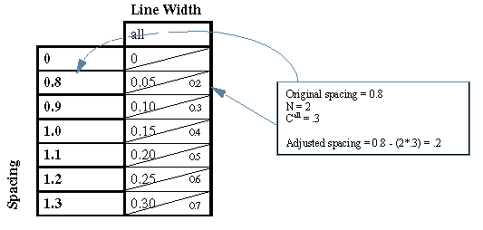
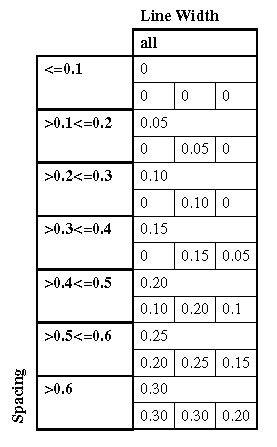

In most cases you can perform all the corrections indicated by all relevant rules tables with a single OPCLINEEND command. In order to successfully combine rules tables, the tables must meet one of the following conditions:
All tables use the same width and spacing intervals.
The tables use different intervals for width and/or spacing, but the intervals are mutually exclusive.
The tables use different intervals for width and/or spacing, and the intervals for one table map cleanly into the intervals for the other table.
There are two assumptions behind the default rule/correction rules structure:
You can do a better job anticipating spacing violations (either due to less than the minimum spacing allowed after a RET operation or to nearby geometries impinging on corner space) after the move than before the move.
For every line width, there is a maximum correction.
Based on these assumptions, you apply that maximum correction if OPCLINEEND discovers a spacing violation you replace the maximum correction with the greatest correction that does not result in a spacing violation, as defined in the correction rule for that spacing.
To write the rules you must know three things:
The number of line-ends corrected for each space that is examined.
The maximum correction for each line width.
The minimum spacing to enforce for line-ends and serifs.
The number of line-ends corrected for each space is really a question about the assumptions under which the table was created. If the assumption is that line-ends are opposite (for line extensions) and adjacent (for serif extensions) to other line-ends, both must be corrected when OPCLINEEND encounters a violation. If the assumption is that line-ends are opposite and adjacent to other types of lines, only the line-end is corrected.
You can check this assumption by examining the rules tables.
If the spacing interval1equals the correction interval2, the number of edges to be corrected is 1.
If the spacing interval is twice the correction interval, the number of edges to be corrected is 2.
The maximum correction for each line width is the maximum table value for that width.
Knowing the number of line-ends corrected for each space, N, makes it easy to calculate the minimum spacing to enforce for line-ends and serifs. In the rules table, for each spacing/width combination, calculate the enforced spacing as:
Spacing - (N * correction)In most tables, the value is the same for every space or width pair in the table. This value is the minimum spacing.
If the values are not the same for every space or width pair in the table, check to see if they are the same for each width. Use the smallest value as the minimum spacing value.
Convert table values into microns.
Analyze your process and tables and calculate values for:
N = The number of edges to be corrected for each space that is examined. In this example, N = 2.
C = The maximum correction(s) for each line width. In this example, the values are:
Line extension — Call = 0.30 Serif Extension — C0.1 = 0.30, C0.15= 0.20, C0.2= 0.10
SL = The minimum spacing for line-ends. In this example SL = 0.7.
SS = The minimum spacing for serifs. In this example SS = 0.9.
For each space/width pair, calculate the spacing constraint to be measured after the default rule is applied by subtracting (N*Cwidth) from the original spacing. Then rewrite the tables using this new spacing. In the following tables, the diagonal line through a table cell enables you to compare the line-end extension (upper half) with the spacing for that cell (lower half).
 |
Expand each correction cell into four cells, as shown in Table 8 and Table 9. In step 6, you convert the spacing and width categories into ranges of values. You can fill in the cells with three different movement distances, one for each of the three conditions as follows:
The opposing edge is not extended.
The opposing edge is an extension of the same type.
The opposing edge is an extension of a different type.
As mentioned previously, rules tables are typically created with an assumption about how many edges are moved for a given space. In step 2 you calculated this as N (for this example N=2). In this step you calculate the movement for all cases (not just the case assumed) and use this assumption to check your rules against the original table.
Tables Table 4 and Table 6 show the spacing after the default rule has been applied, plus the recommended movement from the original table. If the spacing is less than the minimum spacing to enforce, you must write a correction rule for that space. You do this by calculating the distance by which the default rule overshot the desired correction (V), then figuring out the correct movement for the edges. See Table 7 for equation notation.
When the opposing edge is not extended:
V1 = SM - S
C1 = Cd-V(If N = 1, this should be the same as the value from the original table.)
When the opposing edge is an extension of the same type:
V2 = SM - S
C2 = Cd-V/2(If N = 2, this should be the same as the value from the original table.)
When the opposing edge is an extension of another type:
SLS = the greater of SL and SS
V3 = (SLS- S)You choose how to distribute the movement between the serif and the line-end. For example, to subtract V/2 from the default correction for both tables3:
C3 = Cd-V/2Known Values |
N = Number of edges assumed to be corrected for each space. Cd = Default correction for the table. SL = Minimum spacing for line-end extensions. SS = Minimum spacing for serif extensions S = Spacing after default rule was applied. |
Values to Calculate |
V= Violation — distance by which correction overshot desired results. SM = Minimum spacing for the table. If for a line-end extensions table, this is SL. For a serif extensions table this is SS. SLS = Minimum spacing for line-end opposite serif extensions. C = Correction. |
Table 10 shows the conversion of the spacing and width categories into ranges of values:
 |
Select a value for SERIF height. If your process calls for a single serif height, use that value. If your process uses a serif height table to define the serif height, select the value that corresponds to the greatest spacing. For this example, a constant value of 0.5 is assumed.
Use the OPPOSITE EXTENDED metric with SPACE to catch corner spacing violations. Calculate the extension to use for this metric as the maximum vertical and horizontal clearance required between diagonally opposite corners. (For more information on this concept, refer to “Avoiding Problems”.) For this example, 0.3 is used.
Create a rule set for the smallest width in either table.
Create the default rule with:
Create one correction rule for each spacing constraint in each table.
WIDTH = WIDTH from the default rule and SPACE = SPACE from the table.
OPPOSITE EXTENDED = as defined in step 8.
END = movements for that WIDTH and SPACE in the Modified Line-End Extensions table. See Table 10.
SERIF extensions = movement for that WIDTH and SPACE in the Modified Serif Extension. See Table 11.
SERIF depth = serif height minus END. There must be the same number of depth values to match the number of serif extension values. In this example all are the same. (If serif height is not constant, find the value in the serif height table that corresponds to the WIDTH and SPACE values for the rule.) The rules for WIDTH > 0.1 <= 0.15 are shown in Figure 1.
//default rule
lineendBias {OPCLINEEND POLY
WIDTH > 0.1 <= 0.15 END 0.3 SERIF 0.3 0.2// remainder are correction rules
WIDTH > 0.1 <= 0.15 SPACE <= 0.1 OPPOSITE EXTENDED 0.3
END 0.0 0.0 0.0 SERIF 0.0 0.0 0.0 0.50 0.50 0.50
WIDTH > 0.1 <= 0.15 SPACE > 0.1 <= 0.2 OPPOSITE EXTENDED 0.3
END 0.0 0.05 0.0 SERIF 0.0 0.0 0.0 0.50 0.45 0.45
WIDTH > 0.1 <= 0.15 SPACE > 0.2 <= 0.3 OPPOSITE EXTENDED 0.3
END 0.0 0.10 0.0 SERIF 0.0 0.0 0.0 0.50 0.40 0.40
WIDTH > 0.1 <= 0.15 SPACE > 0.3 <= 0.4 OPPOSITE EXTENDED 0.3
END 0.0 0.15 0.05 SERIF 0.0 0.5 0.5 0.50 0.35 0.35
WIDTH > 0.1 <= 0.15 SPACE > 0.4 <= 0.5 OPPOSITE EXTENDED 0.3
END 0.1 0.2 0.1 SERIF 0.0 0.10 0.10 0.40 0.30 0.30
WIDTH > 0.1 <= 0.15 SPACE > 0.5 <= 0.6 OPPOSITE EXTENDED 0.3
END 0.2 0.25 0.15 SERIF 0.0 0.15 0.15 0.30 0.25 0.25
WIDTH > 0.1 <= 0.15 SPACE > 0.6 <= 0.7 OPPOSITE EXTENDED 0.3
END 0.3 0.30 0.20 SERIF 0.1 0.20 0.20 0.20 0.20 0.20
WIDTH > 0.1 <= 0.15 SPACE > 0.7 <= 0.8 OPPOSITE EXTENDED 0.3
END 0.3 0.30 0.25 SERIF 0.2 0.25 0.25 0.20 0.20 0.15
WIDTH > 0.1 <= 0.15 SPACE > 0.8 OPPOSITE EXTENDED 0.3
END 0.3 0.30 0.30 SERIF 0.3 0.3 0.3 0.20 0.20 0.10}Repeat the process for each additional WIDTH.